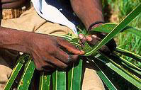

ZANZIBAR EXCURSION

Spice Tour: 20 Min drive from Stone Town: 1 Hour from North Coast: 45 minutes from North east Coast: 1 Hours from East Coast [ Bwejuu , Paje , Jambiani, Dongwe].
Over the centuries, Zanzibar’s cloves, nutmeg, cinnamon, pepper and many other spices brought the sultans of Oman across the Indian Ocean by dhow on the seasonal trade winds. The guides give detailed descriptions of what the various plants are used for, though not all of them are for food.
Other spices include ginger, vanilla, tamarind, menthol and cloves. The island was once the world's leading producer of cloves (3/4 of the total world supply) and the clove industry was the foundation of the golden age of Zanzibar. The henna tree produces a dye from its crushed leaves used by women to elaborately decorate their hands and feet in delicate patterns. On the tour you’ll have the opportunity to have a body part painted, but by quick drying Indian ink, as henna takes all day to dry.
Dolphin Tour is half-day tour that takes place on southern part of Menay Bay conservation area, the bay is a home for bottle-nosed and Humpback dolphins
By using a motor boat we depart from Kizimkazi fishing village south of Zanzibar Island for a boat drive to dolphin site, when we spot them you will be able to swim with them on a very close distance, Menay bay is also holding a very beautiful coral reef for snorkeling.